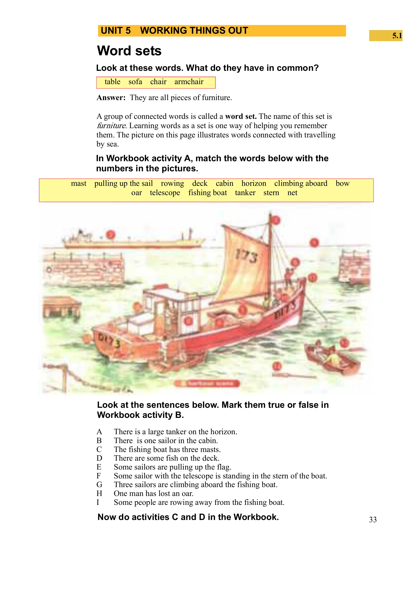

UNIT 5 WORKING THINGS OUT 5.1 Word sets Look at these words. What do they have in common? table sofa chair armchair Answer: They are all pieces of furniture. A group of connected words is called a word set. The name of this set is furniture. Learning words as a set is one way of helping you remember them. The picture on this page illustrates words connected with travelling by sea. In Workbook activity A, match the words below with the numbers in the pictures. mast pulling up the sail rowing deck cabin horizon climbing aboard bow oar telescope fishing boat tanker stern net
Look at the sentences below. Mark them true or false in Workbook activity B. A There is a large tanker on the horizon. B There is one sailor in the cabin. C The fishing boat has three masts. D There are some fish on the deck. E Some sailors are pulling up the flag. F Some sailor with the telescope is standing in the stern of the boat. G Three sailors are climbing aboard the fishing boat. H One man has lost an oar. I Some people are rowing away from the fishing boat. Now do activities C and D in the Workbook.
Some sailor with the telescope بصيغة Some + مفرد بدل A sailor، وحُفظت الصيغة المطبوعة حرفياً.[
{
"num": 1,
"question": "Top-left ship & far-right sea line (circles near top): what are they?",
"model_answer": "Top-left ship (circle 2): tanker | Top-right straight sea line: horizon",
"explain_ar": "الناقلة الطويلة بالأفق والخط الفاصل بين السماء والبحر."
},
{
"num": 2,
"question": "Upper rig of fishing boat: tall pole, canvas hoisted, man looking out, pointed tip",
"model_answer": "Tall wooden pole: mast | Sailors hoisting canvas '173': pulling up the sail | Sailor looking through optical glass: telescope | Front pointed tip: bow",
"explain_ar": "الصاري، رفع الشراع، المقراب، ومقدمة السفينة."
},
{
"num": 3,
"question": "Main body of fishing boat: wooden cabin, floor area, mesh pile, back labelled D173, whole vessel",
"model_answer": "White wheelhouse: cabin | Open wooden floor: deck | Folded pile on deck: net | Rear end 'D173': stern | Whole boat: fishing boat",
"explain_ar": "المقصورة، السطح، الشبكة، المؤخرة، وقارب الصيد."
},
{
"num": 4,
"question": "Lower right & water surface: sailor getting on boat, small boat crew, loose paddle (circle 14)",
"model_answer": "Sailor stepping from tender onto side: climbing aboard | People in small boat at bottom right: rowing | Floating wooden paddle bottom-centre (circle 14): oar",
"explain_ar": "تسلق القارب للصعود، التجديف، والمجداف الطافي رقم 14."
}
][
{
"num": 1,
"question": "A There is a large tanker on the horizon.",
"model_answer": "T (True — large yellow tanker visible along the horizon on the top left).",
"explain_ar": "صحيحة."
},
{
"num": 2,
"question": "B There is one sailor in the cabin.",
"model_answer": "T (True — one man is standing inside the cabin door).",
"explain_ar": "صحيحة."
},
{
"num": 3,
"question": "C The fishing boat has three masts.",
"model_answer": "F → Correction: The fishing boat has one mast.",
"explain_ar": "للزورق صاري واحد فقط لا ثلاثة."
},
{
"num": 4,
"question": "D There are some fish on the deck.",
"model_answer": "F → Correction: There is a net (no fish) on the deck.",
"explain_ar": "ما على السطح شبكة صيد لا أسماك."
},
{
"num": 5,
"question": "E Some sailors are pulling up the flag.",
"model_answer": "F → Correction: Some sailors are pulling up the sail.",
"explain_ar": "يرفعون الشراع (sail) لا العلم (flag)."
},
{
"num": 6,
"question": "F Some sailor with the telescope is standing in the stern of the boat.",
"model_answer": "F → Correction: A sailor with the telescope is standing in the bow of the boat.",
"explain_ar": "يحمل المقراب واقفاً في المقدّمة (bow) لا المؤخرة (stern)."
},
{
"num": 7,
"question": "G Three sailors are climbing aboard the fishing boat.",
"model_answer": "F → Correction: One sailor is climbing aboard the fishing boat.",
"explain_ar": "بحّار واحد فقط يتسلق الصعود إلى المتن."
},
{
"num": 8,
"question": "H One man has lost an oar.",
"model_answer": "T (True — an oar is drifting loose in the sea while the small boat has only one oar).",
"explain_ar": "صحيحة (المجداف الطافي في الأسفل)."
},
{
"num": 9,
"question": "I Some people are rowing away from the fishing boat.",
"model_answer": "F → Correction: Some people are rowing towards the fishing boat.",
"explain_ar": "مقدمة القارب الصغير تتجه نحو قارب الصيد لا مبتعدةً عنه."
}
][
{
"letter": "1",
"word": "4-wheel-drive",
"ar": "سيارة دفع رباعي",
"answer": "Cars"
},
{
"letter": "2",
"word": "accelerator",
"ar": "دوّاسة الوقود/التسارع",
"answer": "Cars"
},
{
"letter": "3",
"word": "ignition key",
"ar": "مفتاح التشغيل",
"answer": "Cars"
},
{
"letter": "4",
"word": "petrol",
"ar": "بنزين/وقود",
"answer": "Cars"
},
{
"letter": "5",
"word": "steering-wheel",
"ar": "مقود السيارة",
"answer": "Cars"
},
{
"letter": "6",
"word": "democracy",
"ar": "ديمقراطية",
"answer": "Politics"
},
{
"letter": "7",
"word": "monarchy",
"ar": "نظام ملكي",
"answer": "Politics"
},
{
"letter": "8",
"word": "parliament",
"ar": "برلمان",
"answer": "Politics"
},
{
"letter": "9",
"word": "president",
"ar": "رئيس جمهورية",
"answer": "Politics"
},
{
"letter": "10",
"word": "republic",
"ar": "جمهورية",
"answer": "Politics"
},
{
"letter": "11",
"word": "airport",
"ar": "مطار",
"answer": "Flying"
},
{
"letter": "12",
"word": "helicopter",
"ar": "مروحية",
"answer": "Flying"
},
{
"letter": "13",
"word": "plane",
"ar": "طائرة",
"answer": "Flying"
},
{
"letter": "14",
"word": "to land",
"ar": "يهبط (للطائرة)",
"answer": "Flying"
},
{
"letter": "15",
"word": "to take off",
"ar": "يقلع (للطائرة)",
"answer": "Flying"
},
{
"letter": "16",
"word": "desertification",
"ar": "التصحر",
"answer": "Environment"
},
{
"letter": "17",
"word": "erosion",
"ar": "التعرية/الانجراف",
"answer": "Environment"
},
{
"letter": "18",
"word": "forestation",
"ar": "التشجير/نمو الغابات",
"answer": "Environment"
},
{
"letter": "19",
"word": "hill",
"ar": "تلّ/ربوة",
"answer": "Environment"
},
{
"letter": "20",
"word": "plain",
"ar": "سهل منبسط",
"answer": "Environment"
}
]{
"pb_text_vs_image": "طُوبق النص واللوحة في PB ص 33 مع pb-35.png: تبيّن أن الصورة مضمّنة بدقة 332×214 (50 ppi) ما طمس أرقام بعض الدوائر الحمراء؛ حُفظ ذلك دون تخمين مع توثيق الجمل A–I بما فيها صيغة 'Some sailor' في F.",
"wb_ocr_vs_image": "طُوبقت صفحتا WB ص 55–56 مع wb-056.png وwb-057.png: استُعيدت سطور 1–14 وجمل التصحيح الست وصندوق الكلمات العشرين كاملاً."
}